99 cards · package wording · image captions distinguish contextual illustrations from event photographs. Search by title, ID or text.
DK-001 / C1 / event Eruh and Şemdinli (15 Aug 1984) 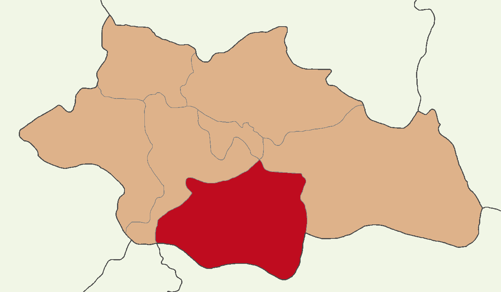
Eruh district location map, 2016; not an image of the 1984 raid. Source · Batuhan duz · CC BY-SA 4.0 FLAVOR On 15 August 1984, PKK fighters attacked Eruh and Şemdinli, opening a new phase of armed conflict in southeastern Turkey.
UNSHADED Martial law reinforcement: place 2 Troops from Available in Hakkari or Siirt. State Resources +2.
SHADED Opening raids: place 2 Underground Guerrillas in Hakkari and 1 in Siirt. Shift Siirt one level toward Opposition.
Sources [
"game-packages/kurdish-coin/0.1.0/cards/c1.yaml",
"research/research-final/data/prototype-deck.csv#DK-001",
"research/research-final/package-b-coin-design/08-event-deck.md"
] DK-002 / C1 / event Raid in Siirt (17 Aug 1984) 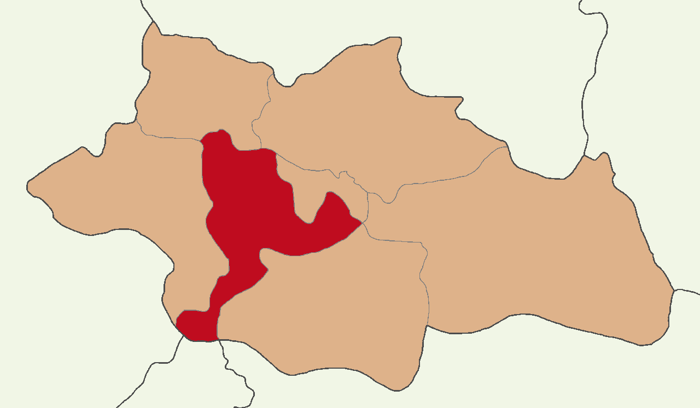
Siirt central district location map, 2016; not an image of the 1984 raid. Source · Batuhan duz · CC BY-SA 4.0 FLAVOR Two days after the Eruh and Şemdinli attacks, another raid struck the Siirt area.
UNSHADED Police alert: the State conducts a free Garrison. Its Activation must be in Siirt.
SHADED Second strike: place 1 Underground Guerrilla in Siirt, then the PKK conducts a free Attack in Siirt with Ambush.
Sources [
"game-packages/kurdish-coin/0.1.0/cards/c1.yaml",
"research/research-final/data/prototype-deck.csv#DK-002",
"research/research-final/package-b-coin-design/08-event-deck.md"
] DK-003 / C1 / event Law 3175 (Mar 1985) 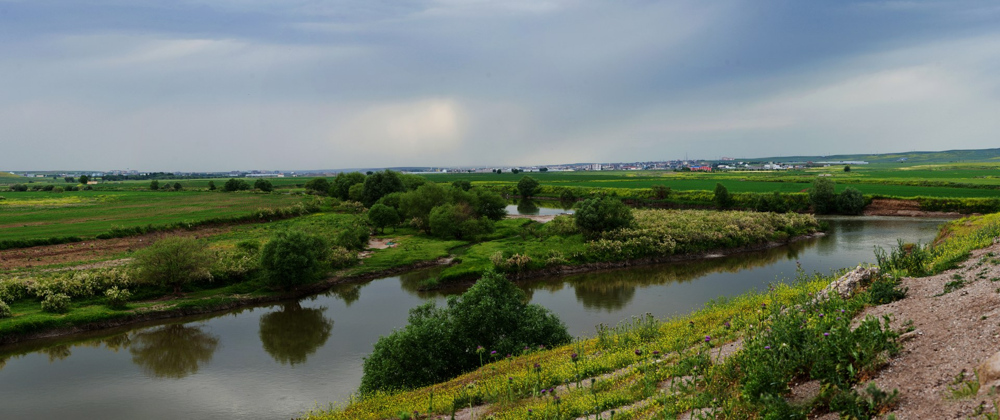
Kurdish village near Bismil, 2015; thematic rural setting, not a depicted guard unit. Source · Dûrzan cîrano · CC BY-SA 3.0 FLAVOR In 1985, Law 3175 created the legal basis for recruiting temporary village guards in the southeast.
ALWAYS Move all 16 Guards from Out of Play to Available. Set the Law in effect.
UNSHADED Guard recruitment: place up to 2 Village Guards in each of up to 2 Mountain or Plain spaces with State Control and Police.
SHADED Recruitment under pressure and pay: State Resources -3. Shift one space with a Village Guard and no PKK Harm marker, or one Mountain space with State Control, one level toward Opposition.
Sources [
"game-packages/kurdish-coin/0.1.0/cards/c1.yaml",
"docs/rules/prototype-card-reference.md",
"research/research-final/data/prototype-deck.csv#DK-003",
"research/research-final/package-b-coin-design/08-event-deck.md"
] DK-004 / C1 / capability ERNK Founded (Mar 1985) 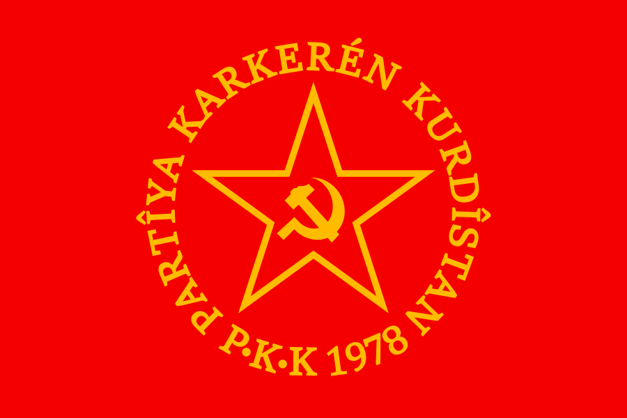
PKK flag used in 1978–1995; organizational context, not the event depicted. Source · Unknown; SVG originally uploaded by -jha- · Public domain (Commons: ineligible for copyright) FLAVOR The PKK established the National Liberation Front of Kurdistan, or ERNK, as a political front in 1985.
UNSHADED Front network exposed: remove 1 Guerrilla from Diyarbakır City or Western Cities, or PKK Resources -2 (State choice).
SHADED PKK Capability (ERNK): Agitate in a Rally may select a City with a PKK Guerrilla even without a PKK Base or PKK Control.
Sources [
"game-packages/kurdish-coin/0.1.0/cards/c1.yaml",
"research/research-final/data/prototype-deck.csv#DK-004",
"research/research-final/package-b-coin-design/08-event-deck.md"
] DK-005 / C1 / event KDP Orders PKK Out (Oct 1985) 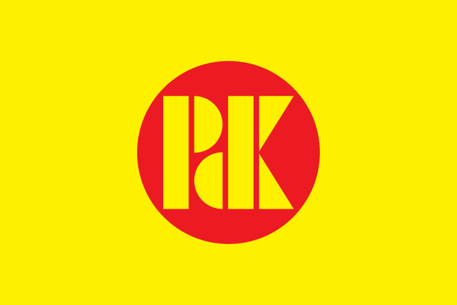
KDP flag illustration, 2013; identifies the party involved. Source · Illegitimate Barrister · CC0 1.0 FLAVOR Relations between the PKK and the Kurdistan Democratic Party were strained as the PKK sought bases in northern Iraq.
ALWAYS If KDP is Host, set it to Tolerant. The date of the KDP break is disputed (1985, 1987 or 1988). October 1985 is a design assumption. Evidence: Low.
UNSHADED KDP posture one more step toward Hostile.
SHADED Guests stay: the PKK moves up to 3 Guerrillas from the KDP Zone to the PUK Zone or Hakkari, Underground, free, or places 2 Underground Guerrillas in the PUK Zone. PKK Resources +1.
Sources [
"game-packages/kurdish-coin/0.1.0/cards/c1.yaml",
"docs/rules/prototype-card-reference.md",
"research/research-final/data/prototype-deck.csv#DK-005",
"research/research-final/package-b-coin-design/08-event-deck.md"
] DK-006 / C1 / capability Chiefs Enter the Guard System (1985) Kurdish village near Bismil, 2015; thematic rural setting, not a depicted guard unit. Source · Dûrzan cîrano · CC BY-SA 3.0 FLAVOR The village guard system drew on local alliances and armed networks as the Turkish state expanded its rural security forces.
UNSHADED State Capability (Tribal Allies): Train may place Village Guards in a Mountain or Plain space with State Control even without Police. Needs Law 3175.
SHADED Armed retinues: apply Guard Abuse (07, section 4.7). Then shift one space with a Village Guard one level toward Opposition.
Sources [
"game-packages/kurdish-coin/0.1.0/cards/c1.yaml",
"research/research-final/data/prototype-deck.csv#DK-006",
"research/research-final/package-b-coin-design/08-event-deck.md"
] DK-007 / C1 / momentum ERNK Action Campaign (Jun-Nov 1985) PKK flag used in 1978–1995; organizational context, not the event depicted. Source · Unknown; SVG originally uploaded by -jha- · Public domain (Commons: ineligible for copyright) FLAVOR The ERNK organized a campaign of actions in 1985 as the PKK sought to broaden its political reach.
UNSHADED Police raids: the State conducts a free Garrison. Place 1 Police in Diyarbakır City.
SHADED PKK Momentum: until the next Reset, each Rally may Agitate in one extra space (normal cost).
Sources [
"game-packages/kurdish-coin/0.1.0/cards/c1.yaml",
"research/research-final/data/prototype-deck.csv#DK-007",
"research/research-final/package-b-coin-design/08-event-deck.md"
] DK-008 / C1 / event Former Member Killed Abroad (Nov 1985) PKK flag used in 1978–1995; organizational context, not the event depicted. Source · Unknown; SVG originally uploaded by -jha- · Public domain (Commons: ineligible for copyright) FLAVOR A former PKK member was killed abroad in 1985, amid disputes extending beyond Turkey’s borders.
UNSHADED Europe -1. PKK Resources -1.
SHADED Damage control: Europe -1. PKK Resources +1.
Sources [
"game-packages/kurdish-coin/0.1.0/cards/c1.yaml",
"research/research-final/data/prototype-deck.csv#DK-008",
"research/research-final/package-b-coin-design/08-event-deck.md"
] DK-009 / C1 / capability Bekaa Training Academy (1986) 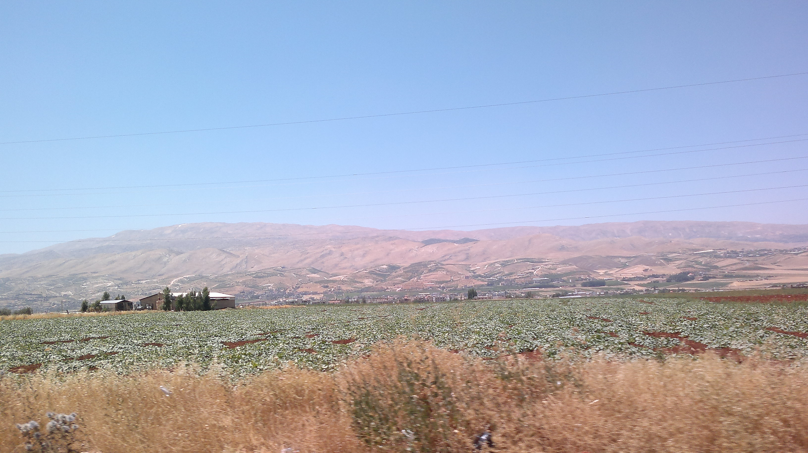
Beqaa Valley, Lebanon, 2011; regional context, not the training academy. Source · Freedom's Falcon · CC BY-SA 3.0 FLAVOR The PKK maintained training facilities in Lebanon’s Bekaa Valley, a region shaped by Syrian influence.
UNSHADED Camp watched: the State conducts a free Diplomacy targeting Syria with +1.
SHADED PKK Capability (Academy): while Syria is Host or Tolerant, a Rally in Syria-Bekaa places up to 2 extra Guerrillas there.
Sources [
"game-packages/kurdish-coin/0.1.0/cards/c1.yaml",
"research/research-final/data/prototype-deck.csv#DK-009",
"research/research-final/package-b-coin-design/08-event-deck.md"
] DK-010 / C1 / momentum Rival Groups Form the TSK (1986) PKK flag used in 1978–1995; organizational context, not the event depicted. Source · Unknown; SVG originally uploaded by -jha- · Public domain (Commons: ineligible for copyright) FLAVOR Rival Kurdish groups formed the TSK in 1986, reflecting divisions within the wider Kurdish political movement.
UNSHADED Recruits divided: PKK Resources -2. State Momentum: until the next Reset, a PKK Rally in a Mountain space places 1 fewer Guerrilla (minimum 1).
SHADED Rivals do not field a force: PKK Resources +2. Place 1 Underground Guerrilla in Van hinterland or Ağrı-Iğdır.
Sources [
"game-packages/kurdish-coin/0.1.0/cards/c1.yaml",
"research/research-final/data/prototype-deck.csv#DK-010",
"research/research-final/package-b-coin-design/08-event-deck.md"
] DK-011 / C1 / momentum PKK Spring Offensive (Mar 1986) 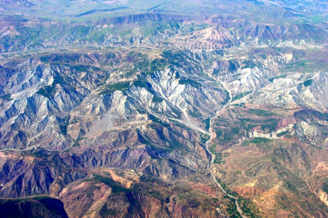
Mountains near Van, 2005; regional terrain, not the 1986 offensive. Source · CallisonUpdate · CC BY 2.0 FLAVOR A PKK spring offensive in 1986 formed part of the widening armed conflict in the southeast.
UNSHADED Patrol security: the State conducts a free Sweep in up to 2 Mountain spaces.
SHADED PKK Momentum: until the next Reset, Ambush may select up to 3 Attack spaces.
Sources [
"game-packages/kurdish-coin/0.1.0/cards/c1.yaml",
"research/research-final/data/prototype-deck.csv#DK-011",
"research/research-final/package-b-coin-design/08-event-deck.md"
] DK-012 / C1 / event Ankara Names a Guerrilla War (May 1985) 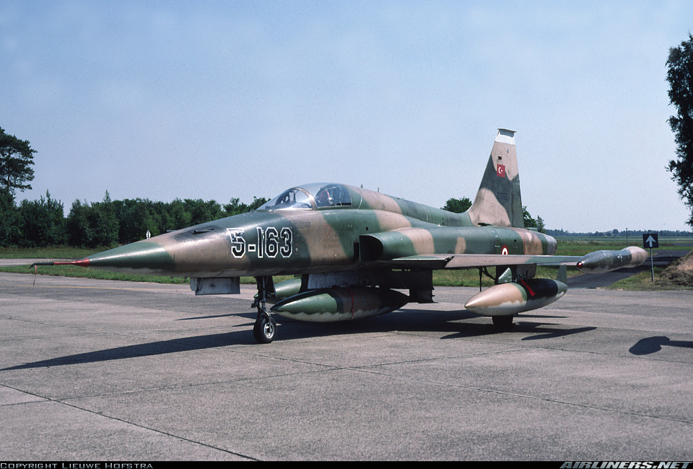
Turkish Air Force F-5A in the Netherlands, August 1986; not shown in the Iraq raid. Source · Lieuwe Hofstra · CC BY 4.0 FLAVOR By 1985, Turkish authorities were publicly describing the violence as a guerrilla war.
UNSHADED War budget: State Resources +4. Place 2 Troops from Available in any Mountain spaces.
SHADED Recognition of the conflict: Europe +1. PKK Resources +1.
Sources [
"game-packages/kurdish-coin/0.1.0/cards/c1.yaml",
"research/research-final/data/prototype-deck.csv#DK-012",
"research/research-final/package-b-coin-design/08-event-deck.md"
] DK-013 / C1 / event Border Attack and Air Raid into Northern Iraq (Aug 1986) Turkish Air Force F-5A in the Netherlands, August 1986; not shown in the Iraq raid. Source · Lieuwe Hofstra · CC BY 4.0 FLAVOR A border attack in August 1986 was followed by a Turkish air raid into northern Iraq.
UNSHADED Hot pursuit raid: the State conducts a free Assault with Cross-Border in the KDP Zone (06, section 3.2, hot pursuit: at most 3 Troops). No extra Resources.
SHADED Camps rebuilt after the raid: the PKK places up to 2 Underground Guerrillas in the KDP Zone if its posture is Host or Tolerant. PKK Resources +1.
Sources [
"game-packages/kurdish-coin/0.1.0/cards/c1.yaml",
"research/research-final/data/prototype-deck.csv#DK-013",
"research/research-final/package-b-coin-design/08-event-deck.md"
] DK-014 / C1 / event Human Rights Association Founded (Jul 1986) 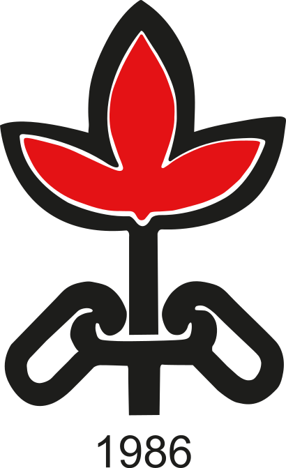
Human Rights Association logo, uploaded in 2021; not a 1986 photograph. Source · İnsan Hakları Derneği · Public domain (Commons: simple logo) FLAVOR Turkey’s Human Rights Association was founded in 1986, adding an organized voice documenting abuses.
UNSHADED Tolerated civil society: Legitimacy +1.
SHADED Documentation begins: Europe +1.
Sources [
"game-packages/kurdish-coin/0.1.0/cards/c1.yaml",
"research/research-final/data/prototype-deck.csv#DK-014",
"research/research-final/package-b-coin-design/08-event-deck.md"
] DK-015 / C1 / pivotal ARGK Formed 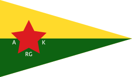
ARGK pennant illustration, 2020; depicts the military wing founded in 1986. Source · Shorepine · CC BY-SA 4.0 FLAVOR The PKK formed the ARGK as its military wing in 1986, giving its armed campaign a distinct organizational name.
PIVOTAL Earliest C1. Condition: At least eight Guerrillas and two PKK Bases in domestic spaces. Place up to four Available Guerrillas among spaces with PKK Bases. Then flip all Guerrillas Underground in every space with a PKK Base, including spaces receiving no placement. Gain three PKK Resources.
Sources [
"game-packages/kurdish-coin/0.1.0/cards/pivotal.yaml",
"research/research-final/data/prototype-deck.csv#DK-015",
"research/research-final/package-b-coin-design/08-event-deck.md"
] DK-016 / C1 / propaganda Propaganda The PKK flag used in 1978–1995; organizational context for the campaign. Source · Unknown; SVG originally uploaded by -jha- · Public domain (Commons: ineligible for copyright) FLAVOR The first campaign covers the opening years of the conflict, from the 1984 raids to the expansion of armed networks.
PROPAGANDA Conduct a Propaganda round (6.0). No player Event choice.
Sources [
"game-packages/kurdish-coin/0.1.0/cards/c1.yaml",
"research/research-final/data/prototype-deck.csv#DK-016",
"research/research-final/package-b-coin-design/08-event-deck.md"
] DK-017 / C2 / event Air Raids on Camps in Iraq (Mar 1987) Turkish Air Force F-5A in the Netherlands, 1986; not an aircraft shown in the 1987 raid. Source · Lieuwe Hofstra · CC BY 4.0 FLAVOR In March 1987, Turkish aircraft struck camps in northern Iraq as the conflict crossed the border.
UNSHADED Remove 1 Guerrilla from the KDP Zone, or 1 PKK Base there if no Guerrilla remains. Place a Disputed Harm marker in the KDP Zone if it has none.
SHADED Camps disperse: move up to 3 Guerrillas from the KDP Zone to the PUK Zone or Hakkari, Underground.
Sources [
"game-packages/kurdish-coin/0.1.0/cards/c2.yaml",
"research/research-final/data/prototype-deck.csv#DK-017",
"research/research-final/package-b-coin-design/08-event-deck.md"
] DK-018 / C2 / event Killings at Pınarcık (Jun 1987) 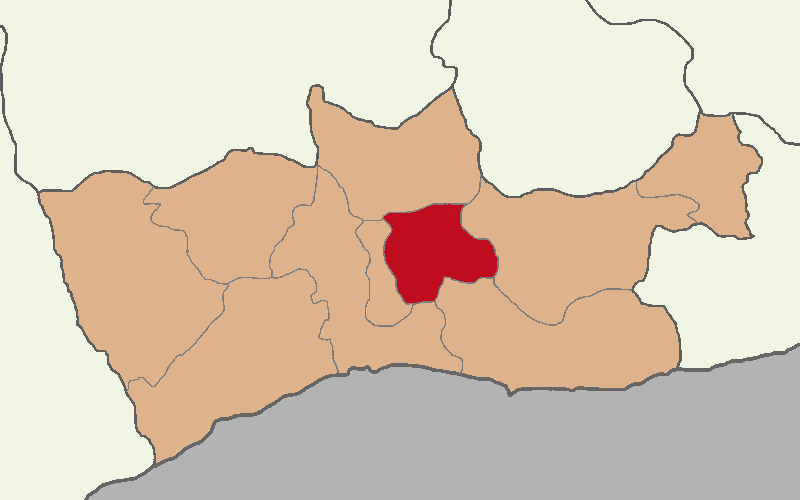
Ömerli district map, 2015. Pınarcık is in this district; this is not a photograph of the attack. Source · Batuhan duz · CC BY-SA 4.0 FLAVOR The killings at Pınarcık in June 1987 brought the conflict’s violence against villagers into sharp focus.
UNSHADED Place a Disputed Harm marker in Mardin. Place up to 2 Village Guards there (needs Law 3175). Europe -1.
SHADED Place a Disputed Harm marker in Mardin. The PKK may pay 2 Resources to remove 1 PKK Harm marker anywhere.
Sources [
"game-packages/kurdish-coin/0.1.0/cards/c2.yaml",
"research/research-final/data/prototype-deck.csv#DK-018",
"research/research-final/package-b-coin-design/08-event-deck.md"
] DK-019 / C2 / event Syria Security Protocol (Jul 1987) 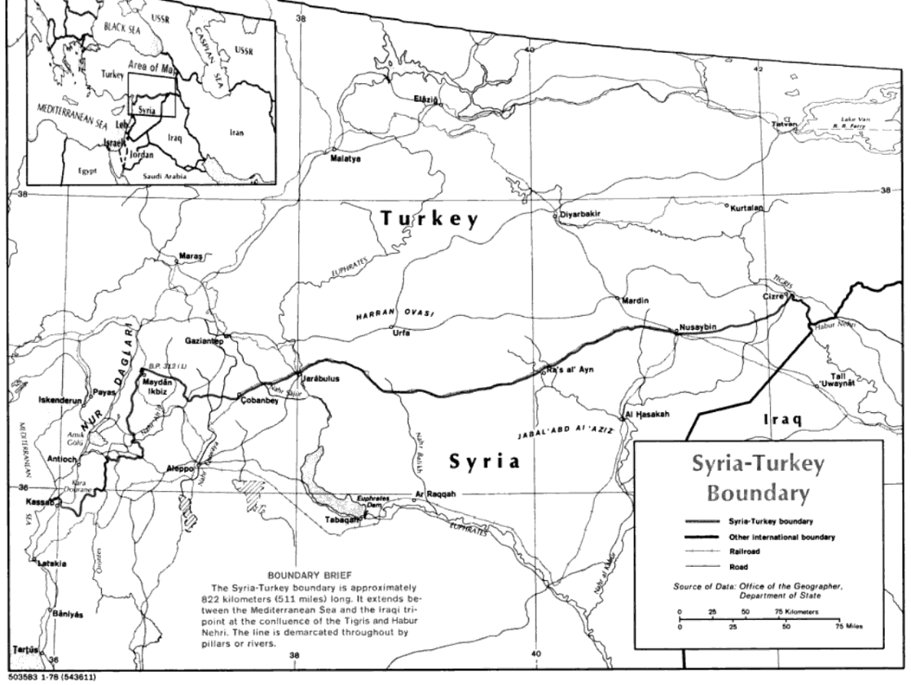
Map of the Syria–Turkey border; geographical context for the 1987 protocol. Source · US Department of State · Public domain (US government) FLAVOR Turkey and Syria signed a security protocol in July 1987 amid Turkish pressure over PKK activity from Syrian territory.
ALWAYS If Syria is Host, set it to Tolerant.
UNSHADED The State conducts a free Diplomacy targeting Syria with +1.
SHADED Paper limits: Syria posture one step toward Host. The PKK conducts a free Rally in Syria-Bekaa.
Sources [
"game-packages/kurdish-coin/0.1.0/cards/c2.yaml",
"docs/rules/prototype-card-reference.md",
"research/research-final/data/prototype-deck.csv#DK-019",
"research/research-final/package-b-coin-design/08-event-deck.md"
] DK-020 / C2 / event OHAL (Jul 1987) 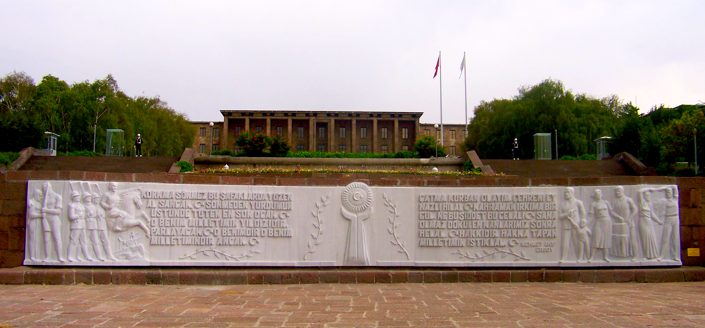
Grand National Assembly of Turkey, 2007; state political context, not a photograph of this event. Source · Makril; building architect Clemens Holzmeister · CC BY-SA 3.0 FLAVOR Turkey introduced the OHAL emergency rule region in 1987, concentrating special powers in the southeast.
ALWAYS If Emergency Rule is Martial Law, set it to OHAL.
UNSHADED Regional governor: the State conducts a free Garrison, then a free Sweep in one space.
SHADED Emergency rule draws scrutiny: Legitimacy -1. Europe +1.
Sources [
"game-packages/kurdish-coin/0.1.0/cards/c2.yaml",
"docs/rules/prototype-card-reference.md",
"research/research-final/data/prototype-deck.csv#DK-020",
"research/research-final/package-b-coin-design/08-event-deck.md"
] DK-021 / C2 / event Attacks on Rival Newroz Gatherings (Mar 1987) 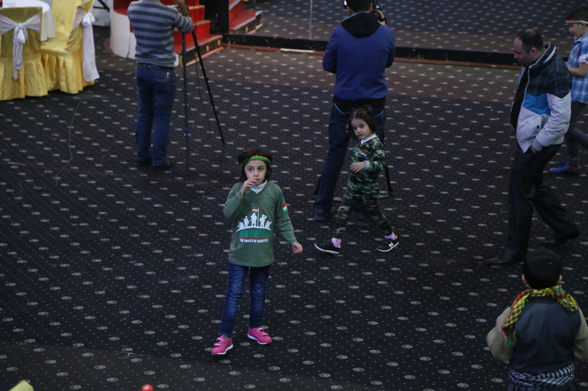
Newroz celebration in Istanbul, 2015; not the 1987 gatherings. Source · Jwslubbock · CC BY-SA 3.0 FLAVOR Rival Newroz gatherings became sites of violence in March 1987, reflecting divisions among Kurdish political groups.
UNSHADED Place a Disputed Harm marker in Şırnak or Mardin (State choice). Europe -1.
SHADED Block only: place a Disputed Harm marker in Şırnak or Mardin (PKK choice). No other effect.
Sources [
"game-packages/kurdish-coin/0.1.0/cards/c2.yaml",
"research/research-final/data/prototype-deck.csv#DK-021",
"research/research-final/package-b-coin-design/08-event-deck.md"
] DK-022 / C2 / capability Special Strike Force Planned (Jul 1987) Grand National Assembly of Turkey, 2007; government context, not the planned 1987 strike force. Source · Makril; building architect Clemens Holzmeister · CC BY-SA 3.0 FLAVOR In 1987, plans for a special strike force formed part of the state’s response to the insurgency.
UNSHADED State Capability (Strike Force): Air Mobility may move up to 6 Troops among up to 4 spaces.
SHADED Plan stalls: State Resources -3. PKK Resources +1.
Sources [
"game-packages/kurdish-coin/0.1.0/cards/c2.yaml",
"research/research-final/data/prototype-deck.csv#DK-022",
"research/research-final/package-b-coin-design/08-event-deck.md"
] DK-023 / C2 / event Final Anfal in Badinan (Aug 1988) 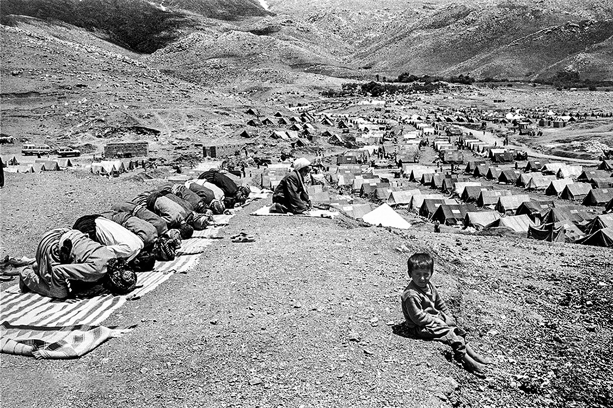
Kurdish refugees in Iran after Halabja, April 1988; related Anfal displacement, not Badinan or Turkey. Source · Sasan Moayedi / Fars Media Corporation · CC BY 4.0 FLAVOR The final Anfal campaign in Badinan in 1988 brought mass violence to Iraqi Kurdish communities near the Turkish border.
UNSHADED Border sealed: place 2 Troops in Hakkari and 1 in Şırnak.
SHADED World attention to Kurds: Europe +1.
Sources [
"game-packages/kurdish-coin/0.1.0/cards/c2.yaml",
"research/research-final/data/prototype-deck.csv#DK-023",
"research/research-final/package-b-coin-design/08-event-deck.md"
] DK-024 / C2 / event Iraqi Kurdish Refugees Admitted (Aug-Sep 1988) 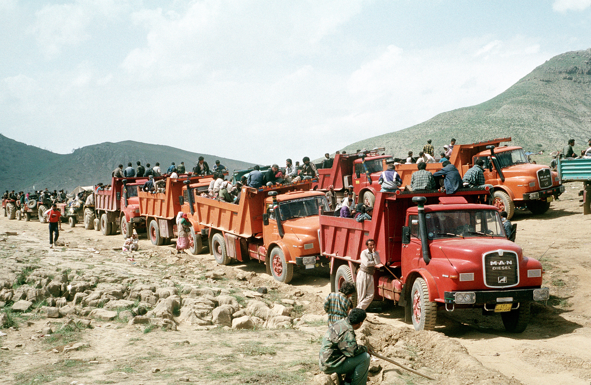
Iraqi Kurdish refugees during Operation Provide Comfort, 1991; not the 1988 arrivals. Source · PHAN April Hatton / US Department of Defense · Public domain (US government) FLAVOR After the 1988 Anfal campaign, Iraqi Kurdish refugees crossed into Turkey seeking safety.
UNSHADED Humanitarian opening: Legitimacy +2. State Resources -2.
SHADED Camps under strain: place 1 Reception marker in Diyarbakır City. Europe +1.
Sources [
"game-packages/kurdish-coin/0.1.0/cards/c2.yaml",
"research/research-final/data/prototype-deck.csv#DK-024",
"research/research-final/package-b-coin-design/08-event-deck.md"
] DK-025 / C2 / event Attacks on Village Schools (Nov 1988) 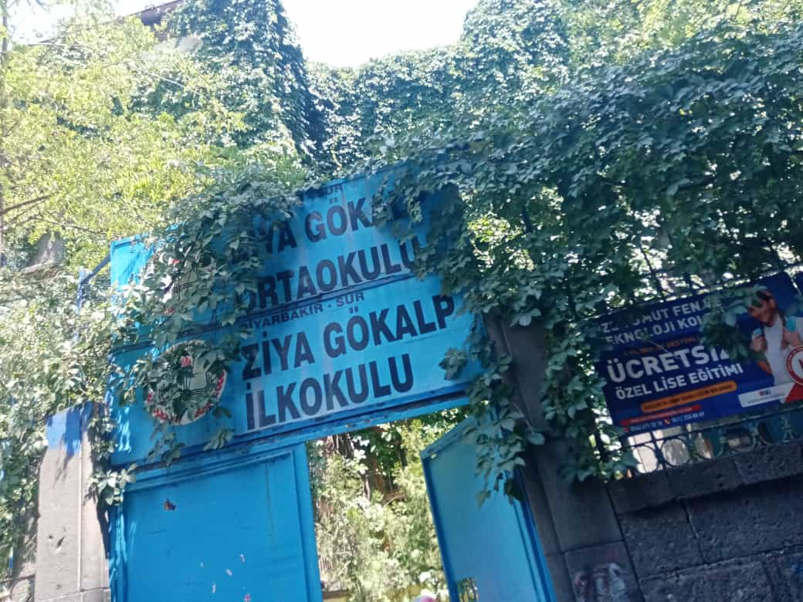
A school in Diyarbakır, 2021; educational context, not a school attacked in 1988. Source · Tragic Kingdom · CC BY-SA 4.0 FLAVOR Attacks on village schools in 1988 exposed teachers, pupils and rural communities to the conflict.
UNSHADED Place a PKK Harm marker in Mardin, Elazığ or Bingöl-Tunceli (State choice). Europe -1.
SHADED Block only: place a PKK Harm marker in one of those spaces (PKK choice). No other effect.
Sources [
"game-packages/kurdish-coin/0.1.0/cards/c2.yaml",
"research/research-final/data/prototype-deck.csv#DK-025",
"research/research-final/package-b-coin-design/08-event-deck.md"
] DK-026 / C2 / event Local Elections (Mar 1989) 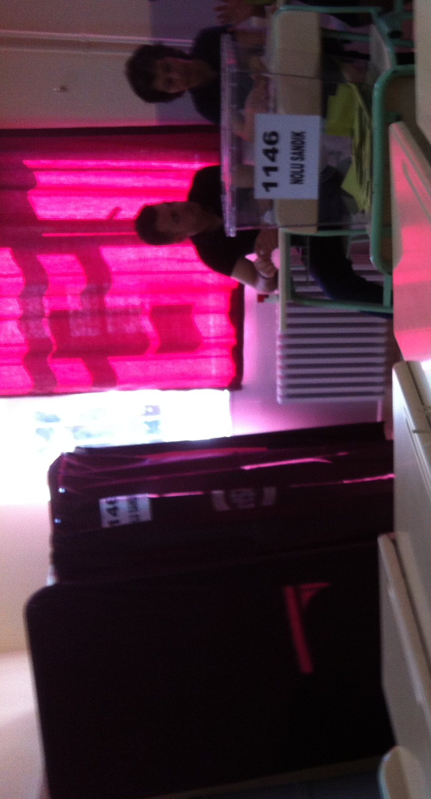
Ballot box in Turkey, 2014 presidential election; electoral context, not the 1989 vote. Source · T.C. Ataturkiye · CC BY-SA 4.0 FLAVOR Turkey’s March 1989 local elections took place as the southeast faced mounting political and security pressures.
UNSHADED Institutions renewed: Legitimacy +2.
SHADED Opposition mayors in the southeast: shift Diyarbakır City or Mardin one level toward Opposition.
Sources [
"game-packages/kurdish-coin/0.1.0/cards/c2.yaml",
"research/research-final/data/prototype-deck.csv#DK-026",
"research/research-final/package-b-coin-design/08-event-deck.md"
] DK-027 / C2 / event Regional Force Doubled (1989) 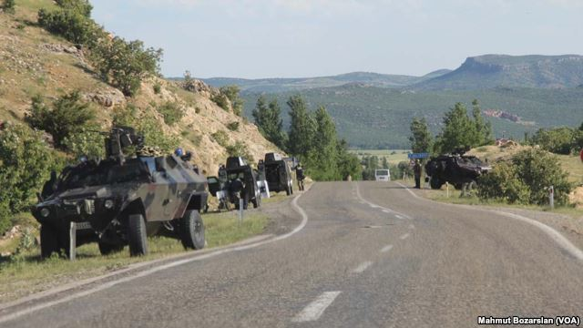
Turkish Army vehicles in southeastern Turkey, 2015; not the force increase in 1989. Source · Mahmut Bozarslan / Voice of America · Public domain (VOA; United States) FLAVOR The expansion of regional forces in 1989 reflected the state’s growing security commitment in the southeast.
UNSHADED Place up to 4 Troops from Available in Şırnak and Hakkari. The State conducts a free Sweep in Şırnak.
SHADED Rising tempo: the PKK conducts a free Attack in one space with an Underground Guerrilla and Troops. State Resources -2.
Sources [
"game-packages/kurdish-coin/0.1.0/cards/c2.yaml",
"research/research-final/data/prototype-deck.csv#DK-027",
"research/research-final/package-b-coin-design/08-event-deck.md"
] DK-028 / C2 / event Paris Kurdish Conference (Oct 1989) 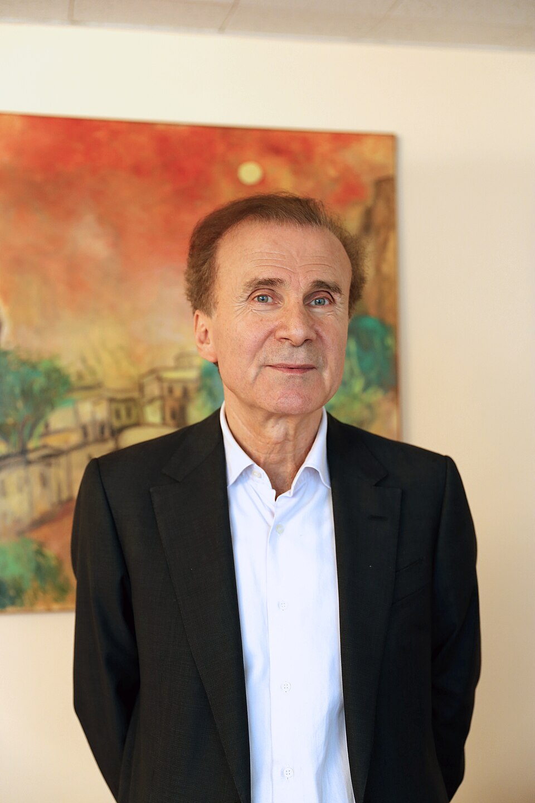
Kendal Nezan in 2014, director of the Kurdish Institute of Paris, a 1989 conference organizer; not a photograph of the conference. Source · Frédérique LE BRUN · CC BY-SA 4.0 FLAVOR A Kurdish conference in Paris in October 1989 brought the issue before an international audience.
UNSHADED Diplomatic protest: the State conducts a free Diplomacy targeting the Europe track.
SHADED Europe +1. The PKK conducts a free Rally on the Europe track.
Sources [
"game-packages/kurdish-coin/0.1.0/cards/c2.yaml",
"research/research-final/data/prototype-deck.csv#DK-028",
"research/research-final/package-b-coin-design/08-event-deck.md",
"https://www.merip.org/1990/03/report-from-paris-the-kurdish-conference/"
] DK-029 / C2 / event SHP Expels Kurdish Deputies (Nov 1989) Ballot box in Turkey, 2014 presidential election; electoral context, not the 1989 vote. Source · T.C. Ataturkiye · CC BY-SA 4.0 FLAVOR The SHP expelled Kurdish deputies in 1989 after their participation in a Kurdish conference in Paris.
UNSHADED Party discipline holds: shift Şanlıurfa or Adıyaman one level toward Support if it has State Control and Police.
SHADED Expelled deputies speak abroad: Europe +1. Shift Diyarbakır City one level toward Opposition.
Sources [
"game-packages/kurdish-coin/0.1.0/cards/c2.yaml",
"research/research-final/data/prototype-deck.csv#DK-029",
"research/research-final/package-b-coin-design/08-event-deck.md"
] DK-030 / C2 / event İkikaya Village Killings (Nov 1989) 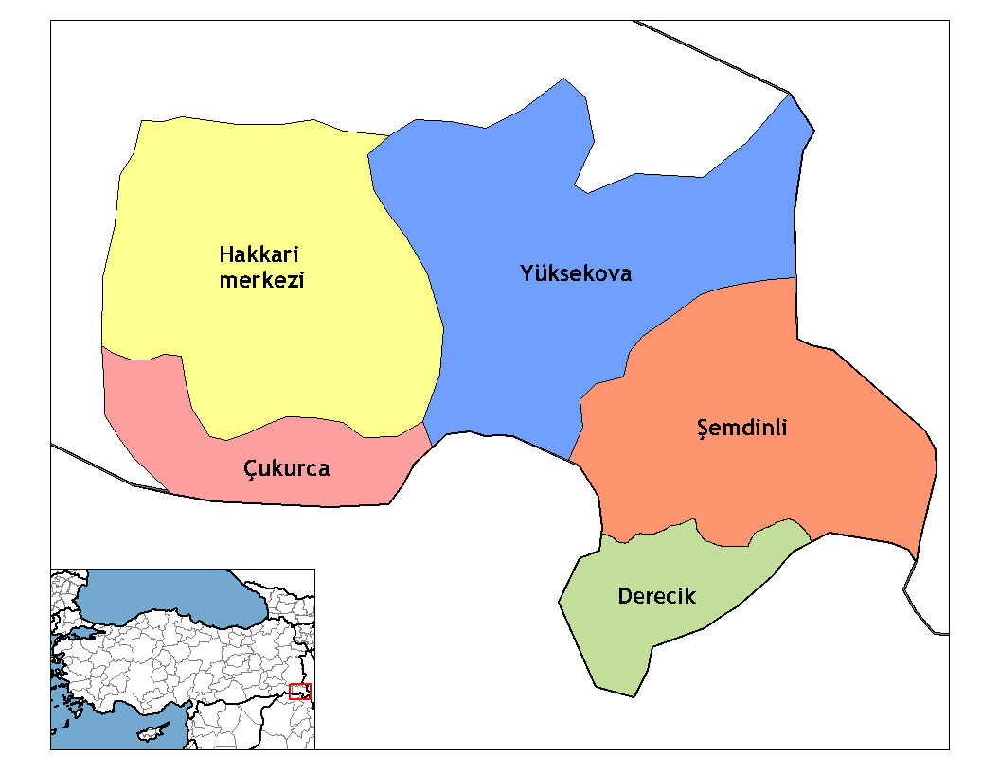
Hakkâri districts map, updated 2019; İkikaya is in Yüksekova district. Source · Rarelibra and later contributors · Public domain (creator dedication) FLAVOR Villagers were killed at İkikaya in November 1989 as violence continued across the southeast.
UNSHADED Place a PKK Harm marker in Hakkari. Europe -1. Place 1 Village Guard in Hakkari (needs Law 3175).
SHADED Block only: place a PKK Harm marker in Hakkari. No other effect.
Sources [
"game-packages/kurdish-coin/0.1.0/cards/c2.yaml",
"research/research-final/data/prototype-deck.csv#DK-030",
"research/research-final/package-b-coin-design/08-event-deck.md"
] DK-031 / C2 / event Çukurca Villagers Refuse Guard Duty (1989) 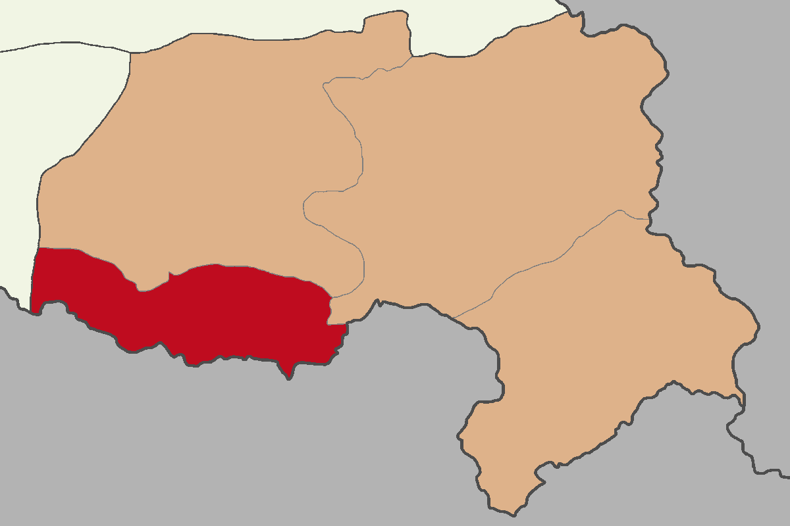
Çukurca district map, 2016; geographic context, not the 1989 village action. Source · Batuhan duz · CC BY-SA 4.0 FLAVOR In 1989, villagers in Çukurca refused village guard duty, highlighting the pressures placed on rural communities.
UNSHADED Prosecutions hold the line: place 1 Police and 1 Village Guard in Hakkari.
SHADED Guards hand back weapons: remove up to 2 Village Guards from Hakkari or Şırnak to Available. No Harm marker. State Resources -1.
Sources [
"game-packages/kurdish-coin/0.1.0/cards/c2.yaml",
"research/research-final/data/prototype-deck.csv#DK-031",
"research/research-final/package-b-coin-design/08-event-deck.md"
] DK-032 / C2 / event Lawyer Access Decree (Sep 1989) Human Rights Association logo, uploaded in 2021; human-rights context, not an image of the 1989 decree. Source · İnsan Hakları Derneği · Public domain (Commons: simple logo) FLAVOR A September 1989 decree addressed lawyers’ access to detainees amid concern about detention practices.
UNSHADED Custody reform: Legitimacy +2.
SHADED Lawyers barred again: Legitimacy -1. Europe +1.
Sources [
"game-packages/kurdish-coin/0.1.0/cards/c2.yaml",
"research/research-final/data/prototype-deck.csv#DK-032",
"research/research-final/package-b-coin-design/08-event-deck.md"
] DK-033 / C2 / event Abuse and Killings in Custody Reported (1989) Human Rights Association logo, uploaded in 2021; human-rights context, not an image of the reported incidents. Source · İnsan Hakları Derneği · Public domain (Commons: simple logo) FLAVOR Reports of abuse and deaths in custody drew attention to the treatment of detainees in 1989.
UNSHADED Block only: place a State Harm marker in Mardin or Hakkari (State choice). No other effect.
SHADED Place a State Harm marker in Mardin or Hakkari (PKK choice). Legitimacy -1. Shift that space one level toward Opposition.
Sources [
"game-packages/kurdish-coin/0.1.0/cards/c2.yaml",
"research/research-final/data/prototype-deck.csv#DK-033",
"research/research-final/package-b-coin-design/08-event-deck.md"
] DK-034 / C2 / event Governors Exile Local Party Members (Sep 1989) Ballot box in Turkey, 2014 presidential election; electoral context, not the 1989 expulsions. Source · T.C. Ataturkiye · CC BY-SA 4.0 FLAVOR In 1989, emergency-rule governors used their powers against local political figures in the southeast.
UNSHADED Emergency powers: the State conducts a free Garrison with Activation in Şırnak or Bingöl-Tunceli.
SHADED Banishment without trial: Legitimacy -1. Shift Şırnak one level toward Opposition.
Sources [
"game-packages/kurdish-coin/0.1.0/cards/c2.yaml",
"research/research-final/data/prototype-deck.csv#DK-034",
"research/research-final/package-b-coin-design/08-event-deck.md"
] DK-035 / C2 / propaganda Propaganda The PKK flag used in 1978–1995; organizational context for the campaign. Source · Unknown; SVG originally uploaded by -jha- · Public domain (Commons: ineligible for copyright) FLAVOR During the late 1980s, emergency rule, cross-border operations and the village guard system reshaped the conflict.
PROPAGANDA Conduct a Propaganda round (6.0). No player Event choice.
Sources [
"game-packages/kurdish-coin/0.1.0/cards/c2.yaml",
"research/research-final/data/prototype-deck.csv#DK-035",
"research/research-final/package-b-coin-design/08-event-deck.md"
] DK-036 / C3 / event OHAL Powers (KHK 413, Apr 1990) IMAGE PLACEHOLDER
FLAVOR Decree KHK 413 expanded the emergency governor’s powers in April 1990.
UNSHADED If Emergency Rule is OHAL, set it to OHAL Extended Powers. Village Clearance is now available (DD-07.2; 07, section 8.2).
SHADED Press curbs: Legitimacy -2. Europe +1.
Sources [
"game-packages/kurdish-coin/0.1.0/cards/c3.yaml",
"research/research-final/data/prototype-deck.csv#DK-036",
"research/research-final/package-b-coin-design/08-event-deck.md"
] DK-037 / C3 / event HEP Founded (Jun 1990) IMAGE PLACEHOLDER
FLAVOR The People’s Labour Party, HEP, was founded in June 1990 as Kurdish political representation developed in legal party politics.
ALWAYS Set Legal Space to Open. Then run Legal Politics lines 3 and 4 twice (8.5). Lines 5 and 6 do not run. HEP Founded: Legal Space to Open. Offices placed by procedure lines 3 and 4 (twice).
UNSHADED The State may place the Closure Case marker now if none is on the track (07, section 6.3).
SHADED Political opening: shift one space with a PKK Base and no Office one level toward Opposition.
Sources [
"game-packages/kurdish-coin/0.1.0/cards/c3.yaml",
"docs/prototype/31-pivotals-structural-draft.md §5.1",
"research/research-final/data/prototype-deck.csv#DK-037",
"research/research-final/package-b-coin-design/08-event-deck.md"
] DK-038 / C3 / momentum KHK 430 (Dec 1990) IMAGE PLACEHOLDER
FLAVOR Decree KHK 430 granted further powers to the emergency-rule administration in December 1990.
UNSHADED State Momentum: until the next Reset, Sweep costs 1 Resource per space at any Emergency Rule step. The State conducts a free Garrison.
SHADED Near-immunity for governors draws scrutiny: Legitimacy -2.
Sources [
"game-packages/kurdish-coin/0.1.0/cards/c3.yaml",
"research/research-final/data/prototype-deck.csv#DK-038",
"research/research-final/package-b-coin-design/08-event-deck.md"
] DK-039 / C3 / event Law 3713 (Apr 1991) IMAGE PLACEHOLDER
FLAVOR Turkey adopted the Anti-Terror Law, Law 3713, in April 1991.
UNSHADED Language ban lifted: Legitimacy +2. Shift one City with State Control and Police one level toward Support.
SHADED Article 8 prosecutions: Legitimacy -1. Europe +1.
Sources [
"game-packages/kurdish-coin/0.1.0/cards/c3.yaml",
"research/research-final/data/prototype-deck.csv#DK-039",
"research/research-final/package-b-coin-design/08-event-deck.md"
] DK-040 / C3 / event Northern Iraq Vacuum (Apr 1991) IMAGE PLACEHOLDER
FLAVOR The 1991 Gulf War and Kurdish uprising left a power vacuum in northern Iraq, changing conditions along Turkey’s border.
ALWAYS Set the Vacuum in effect for the rest of the game. A Tolerant KDP or PUK then allows Cross-Border (4.2.2) and PKK Bases in its box (8.1.2).
UNSHADED Coalition presence: the State conducts a free Sweep in the KDP Zone through Cross-Border (access rules apply).
SHADED Power vacuum: place 2 Guerrillas and 1 PKK Base in the KDP Zone or PUK Zone (posture permitting).
Sources [
"game-packages/kurdish-coin/0.1.0/cards/c3.yaml",
"docs/prototype/31-pivotals-structural-draft.md §5.2",
"research/research-final/data/prototype-deck.csv#DK-040",
"research/research-final/package-b-coin-design/08-event-deck.md"
] DK-041 / C3 / event Operation in Northern Iraq (Aug 1991) IMAGE PLACEHOLDER
FLAVOR Turkish forces conducted an operation in northern Iraq in August 1991 against PKK positions.
UNSHADED The State conducts a free Sweep and a free Assault in the KDP Zone through Cross-Border (access and Disputed Harm rules apply).
SHADED Criticism of the operation: Legitimacy -1. Move up to 3 Guerrillas from the KDP Zone to the PUK Zone, Underground.
Sources [
"game-packages/kurdish-coin/0.1.0/cards/c3.yaml",
"research/research-final/data/prototype-deck.csv#DK-041",
"research/research-final/package-b-coin-design/08-event-deck.md"
] DK-042 / C3 / event Election Brings HEP Deputies to Parliament (Oct 1991) IMAGE PLACEHOLDER
FLAVOR In the 1991 election, HEP candidates entered parliament on an electoral alliance with the SHP.
UNSHADED Deputies enter parliament: Legitimacy +1. If Legal Space is Open, run Legal Politics line 4 once.
SHADED Votes in the southeast: shift Mardin, Batman or Diyarbakır hinterland one level toward Opposition if it has no Office.
Sources [
"game-packages/kurdish-coin/0.1.0/cards/c3.yaml",
"research/research-final/data/prototype-deck.csv#DK-042",
"research/research-final/package-b-coin-design/08-event-deck.md"
] DK-043 / C3 / event Newroz Killings (Mar 1992) IMAGE PLACEHOLDER
FLAVOR Newroz celebrations in March 1992 were marked by deadly confrontations in southeastern Turkey.
UNSHADED Block only: place a State Harm marker in Mardin and in Şırnak. No other effect.
SHADED Place a State Harm marker in Mardin and in Şırnak. Legitimacy -1. Europe +1. Shift Mardin one level toward Opposition.
Sources [
"game-packages/kurdish-coin/0.1.0/cards/c3.yaml",
"research/research-final/data/prototype-deck.csv#DK-043",
"research/research-final/package-b-coin-design/08-event-deck.md"
] DK-044 / C3 / event Turkey-Syria Accord (1992) IMAGE PLACEHOLDER
FLAVOR Turkey and Syria reached an accord in 1992 amid continued Turkish concern about PKK activity linked to Syria.
UNSHADED Bekaa camp closed: Syria posture one step toward Hostile. Remove 1 PKK Base from Syria-Bekaa if 2 or more are there.
SHADED Leader stays: move up to 2 Guerrillas from Syria-Bekaa to Mardin or Şanlıurfa, free. State Resources -2.
Sources [
"game-packages/kurdish-coin/0.1.0/cards/c3.yaml",
"research/research-final/data/prototype-deck.csv#DK-044",
"research/research-final/package-b-coin-design/08-event-deck.md"
] DK-045 / C3 / event Şırnak Town Battle (Aug 1992) IMAGE PLACEHOLDER
FLAVOR A battle in Şırnak in August 1992 brought heavy fighting and destruction to the town.
UNSHADED Block only: place a State Harm marker in Şırnak and 1 Reception marker in Diyarbakır City. No other effect.
SHADED Place a State Harm marker in Şırnak and 1 Reception marker in Diyarbakır City. Legitimacy -1. Shift Diyarbakır City one level toward Opposition.
Sources [
"game-packages/kurdish-coin/0.1.0/cards/c3.yaml",
"research/research-final/data/prototype-deck.csv#DK-045",
"research/research-final/package-b-coin-design/08-event-deck.md"
] DK-047 / C3 / event Large Operation with KDP Help (Oct-Nov 1992) IMAGE PLACEHOLDER
FLAVOR Turkish forces and the KDP took part in a large operation against PKK forces in northern Iraq in late 1992.
UNSHADED The State conducts a free Sweep and a free Assault in the KDP Zone through Cross-Border. If KDP is Hostile or Aligned with Turkey, ignore the Mountain modifier.
SHADED Fighters slip away: move up to 4 Guerrillas from the KDP Zone to the PUK Zone or Hakkari, Underground. State Resources -3.
Sources [
"game-packages/kurdish-coin/0.1.0/cards/c3.yaml",
"research/research-final/data/prototype-deck.csv#DK-047",
"research/research-final/package-b-coin-design/08-event-deck.md"
] DK-048 / C3 / event Houses Burned at Kelekçi (Nov 1992) IMAGE PLACEHOLDER
FLAVOR Houses were burned at Kelekçi in November 1992, part of the conflict’s toll on rural settlements.
UNSHADED Block only: place a State Harm marker in Diyarbakır hinterland. No other effect.
SHADED Place a State Harm marker in Diyarbakır hinterland. Legitimacy -1. Europe +1.
Sources [
"game-packages/kurdish-coin/0.1.0/cards/c3.yaml",
"research/research-final/data/prototype-deck.csv#DK-048",
"research/research-final/package-b-coin-design/08-event-deck.md"
] DK-049 / C3 / event Journalists and Press Staff Killed (1992) IMAGE PLACEHOLDER
FLAVOR Journalists and press workers were killed in 1992 while reporting on the conflict and Kurdish politics.
UNSHADED Block only: place a Disputed Harm marker in Diyarbakır City. No other effect.
SHADED Place a Disputed Harm marker in Diyarbakır City. Reveal 1 Covert marker at random. Europe +1.
Sources [
"game-packages/kurdish-coin/0.1.0/cards/c3.yaml",
"research/research-final/data/prototype-deck.csv#DK-049",
"research/research-final/package-b-coin-design/08-event-deck.md"
] DK-050 / C3 / momentum Özgür Gündem Begins Publication (May 1992) IMAGE PLACEHOLDER
FLAVOR The newspaper Özgür Gündem began publication in May 1992, reporting on Kurdish issues and the conflict.
UNSHADED Press prosecutions: State Momentum: until the next Reset, Agitation in Diyarbakır City costs 1 more per step.
SHADED Reporting raises the cost of harm: Europe +1. PKK Momentum: until the next Reset, each revealed Covert marker costs Legitimacy 1 more.
Sources [
"game-packages/kurdish-coin/0.1.0/cards/c3.yaml",
"research/research-final/data/prototype-deck.csv#DK-050",
"research/research-final/package-b-coin-design/08-event-deck.md"
] DK-051 / C3 / event Prosecutor Files to Close HEP (Jul 1992) IMAGE PLACEHOLDER
FLAVOR In July 1992, a prosecutor sought the closure of HEP, placing the party under legal threat.
UNSHADED Place the Closure Case marker now if none is on the track. Legal Space to Prosecuted.
SHADED The case draws attention abroad: Europe +1.
Sources [
"game-packages/kurdish-coin/0.1.0/cards/c3.yaml",
"research/research-final/data/prototype-deck.csv#DK-051",
"research/research-final/package-b-coin-design/08-event-deck.md"
] DK-052 / C3 / event Attack on Boğazköy Gendarme Station (Nov 1992) IMAGE PLACEHOLDER
FLAVOR An attack on the Boğazköy gendarme station in November 1992 was one of the armed clashes of the period.
UNSHADED Reinforcement: place 2 Police and 1 Troop in Diyarbakır hinterland.
SHADED The PKK conducts a free Attack with Ambush in Diyarbakır hinterland or an adjacent space with an Underground Guerrilla.
Sources [
"game-packages/kurdish-coin/0.1.0/cards/c3.yaml",
"research/research-final/data/prototype-deck.csv#DK-052",
"research/research-final/package-b-coin-design/08-event-deck.md"
] DK-053 / C3 / event Unattributed Killings in the Southeast (1992) IMAGE PLACEHOLDER
FLAVOR A wave of killings in the southeast in 1992 remained unattributed, deepening fear and demands for accountability.
UNSHADED Apply 07, section 10.1: remove 1 Office or 1 Guerrilla, in that priority, from the highest-Pop eligible space among Şırnak, Mardin, Diyarbakır City and Diyarbakır hinterland. Place a Disputed Harm marker there.
SHADED Apply 07, section 10.1 as unshaded. Then Europe +1 (calls for an inquiry).
Sources [
"game-packages/kurdish-coin/0.1.0/cards/c3.yaml",
"research/research-final/data/prototype-deck.csv#DK-053",
"research/research-final/package-b-coin-design/08-event-deck.md"
] DK-054 / C3 / pivotal Serhildan IMAGE PLACEHOLDER
FLAVOR Serhildan, Kurdish for uprising, came to describe a wave of popular protests in the Kurdish regions of Turkey.
PIVOTAL Earliest C3. Condition: Total Opposition 14 or more, and Mardin, Batman, Şırnak or Siirt at Passive or Active Opposition. Shift up to three domestic spaces that hold a PKK piece and no Office one level toward Opposition. Diyarbakır City may be one. Europe +1 (the Ban cap applies). The normal shift rule applies: a PKK Harm or Coercion marker blocks a shift toward Opposition.
Sources [
"game-packages/kurdish-coin/0.1.0/cards/pivotal.yaml",
"research/research-final/data/prototype-deck.csv#DK-054",
"research/research-final/package-b-coin-design/08-event-deck.md"
] DK-055 / C3 / propaganda Propaganda IMAGE PLACEHOLDER
FLAVOR The early 1990s brought mass protests, new legal parties and an intensifying war across the southeast.
PROPAGANDA Conduct a Propaganda round (6.0). No player Event choice.
Sources [
"game-packages/kurdish-coin/0.1.0/cards/c3.yaml",
"research/research-final/data/prototype-deck.csv#DK-055",
"research/research-final/package-b-coin-design/08-event-deck.md"
] DK-056 / C4 / event PKK Unilateral Ceasefire (Mar 1993) IMAGE PLACEHOLDER
FLAVOR The PKK declared a unilateral ceasefire in March 1993, opening a brief period of uncertainty about the conflict’s direction.
UNSHADED Ceasefire not recognized: State Resources +3. The State conducts a free Garrison.
SHADED Declare Ceasefire for the PKK: Ceasefire to Declared and Europe +1 (07, section 7.1). Shift up to 2 spaces with PKK pieces and no Office one level toward Opposition.
Sources [
"game-packages/kurdish-coin/0.1.0/cards/c4.yaml",
"research/research-final/data/prototype-deck.csv#DK-056",
"research/research-final/package-b-coin-design/08-event-deck.md"
] DK-057 / C4 / event Ceasefire Extended at Bar Elias (Apr 1993) IMAGE PLACEHOLDER
FLAVOR At Bar Elias in April 1993, the PKK announced an extension of its unilateral ceasefire.
UNSHADED If Ceasefire is Declared, the State may accept now: Ceasefire to Reciprocal Restraint and Legitimacy +1. Otherwise no effect.
SHADED If Ceasefire is None, set it to Declared. PUK posture one step toward Host. Europe +1.
Sources [
"game-packages/kurdish-coin/0.1.0/cards/c4.yaml",
"research/research-final/data/prototype-deck.csv#DK-057",
"research/research-final/package-b-coin-design/08-event-deck.md"
] DK-058 / C4 / event President Özal Dies (Apr 1993) IMAGE PLACEHOLDER
FLAVOR President Turgut Özal died in April 1993 during the period of the PKK ceasefire.
UNSHADED Spoiler: if Ceasefire is Declared or Reciprocal Restraint, set it to None with no Restraint Broken marker. State Resources +2.
SHADED Uncertainty in Ankara: State Resources -3. PKK Resources +1.
Sources [
"game-packages/kurdish-coin/0.1.0/cards/c4.yaml",
"research/research-final/data/prototype-deck.csv#DK-058",
"research/research-final/package-b-coin-design/08-event-deck.md"
] DK-059 / C4 / event Bingöl Road Killings (May 1993) IMAGE PLACEHOLDER
FLAVOR In May 1993, PKK fighters killed unarmed soldiers on the Bingöl road, a defining episode in the collapse of the ceasefire.
UNSHADED Place a PKK Harm marker in Bingöl-Tunceli. Ceasefire to None; place the PKK Restraint Broken marker. Europe -1.
SHADED Block only: place a PKK Harm marker in Bingöl-Tunceli. Ceasefire to None. No other effect.
Sources [
"game-packages/kurdish-coin/0.1.0/cards/c4.yaml",
"research/research-final/data/prototype-deck.csv#DK-059",
"research/research-final/package-b-coin-design/08-event-deck.md"
] DK-060 / C4 / event Constitutional Court Dissolves HEP (Jul 1993) IMAGE PLACEHOLDER
FLAVOR Turkey’s Constitutional Court dissolved HEP in July 1993, closing a key vehicle for Kurdish legal politics.
UNSHADED If a Closure Case marker is on the track, resolve Legal Politics line 1 now (ban).
SHADED The ban draws protest: Europe +1. Shift Diyarbakır City one level toward Opposition if it has no Office.
Sources [
"game-packages/kurdish-coin/0.1.0/cards/c4.yaml",
"research/research-final/data/prototype-deck.csv#DK-060",
"research/research-final/package-b-coin-design/08-event-deck.md"
] DK-061 / C4 / event PKK Attacks on Turkish Offices in Europe (Jun 1993) IMAGE PLACEHOLDER
FLAVOR In June 1993, coordinated attacks on Turkish offices in Europe brought the conflict into European cities.
UNSHADED Europe -2. Legitimacy +1.
SHADED Diaspora networks raise funds: PKK Resources +2. Europe -1.
Sources [
"game-packages/kurdish-coin/0.1.0/cards/c4.yaml",
"research/research-final/data/prototype-deck.csv#DK-061",
"research/research-final/package-b-coin-design/08-event-deck.md"
] DK-062 / C4 / event Deputy Shot Dead in Batman (Sep 1993) IMAGE PLACEHOLDER
FLAVOR A deputy was shot dead in Batman in September 1993 amid a wave of political violence.
UNSHADED Place a Disputed Harm marker in Batman City. A prosecution opens: Legitimacy +1.
SHADED Place a Disputed Harm marker in Batman City. Reveal 1 Covert marker at random. Europe +1.
Sources [
"game-packages/kurdish-coin/0.1.0/cards/c4.yaml",
"research/research-final/data/prototype-deck.csv#DK-062",
"research/research-final/package-b-coin-design/08-event-deck.md"
] DK-063 / C4 / event Destruction in Lice (Oct 1993) IMAGE PLACEHOLDER
FLAVOR In October 1993, Lice suffered extensive destruction during violence involving Turkish security forces.
UNSHADED Block only: place a State Harm marker in Diyarbakır hinterland and 1 Reception marker in Diyarbakır City. No other effect.
SHADED Place a State Harm marker in Diyarbakır hinterland and 1 Reception marker in Diyarbakır City. Legitimacy -1. Shift Diyarbakır City one level toward Opposition.
Sources [
"game-packages/kurdish-coin/0.1.0/cards/c4.yaml",
"research/research-final/data/prototype-deck.csv#DK-063",
"research/research-final/package-b-coin-design/08-event-deck.md"
] DK-064 / C4 / event Germany Bans PKK and ERNK (Nov 1993) IMAGE PLACEHOLDER
FLAVOR Germany banned the PKK and ERNK in November 1993 after a period of attacks and protests in Europe.
UNSHADED Place the Europe Ban marker on the Europe track (04, section 3.6). If Europe is above 3, set it to 3. PKK Resources -2.
SHADED Protests across Europe: Europe +1. Do not place the Europe Ban marker.
Sources [
"game-packages/kurdish-coin/0.1.0/cards/c4.yaml",
"research/research-final/data/prototype-deck.csv#DK-064",
"research/research-final/package-b-coin-design/08-event-deck.md"
] DK-065 / C4 / event DEP Founded (May 1993) IMAGE PLACEHOLDER
FLAVOR The Democracy Party, DEP, was founded in May 1993 as pressure mounted on HEP.
UNSHADED The State may place the Closure Case marker if none is on the track.
SHADED Non-player side: if Legal Space is Banned, resolve Legal Politics line 2 now. Otherwise place 1 Office in the line 4 order.
Sources [
"game-packages/kurdish-coin/0.1.0/cards/c4.yaml",
"research/research-final/data/prototype-deck.csv#DK-065",
"research/research-final/package-b-coin-design/08-event-deck.md"
] DK-066 / C4 / event Parliament Lifts DEP Immunity (Mar 1994) IMAGE PLACEHOLDER
FLAVOR In March 1994, Turkey’s parliament lifted the immunity of DEP deputies, exposing them to prosecution.
UNSHADED Remove 2 Offices. Legitimacy -1.
SHADED Arrests of deputies draw protest: Legitimacy -2. Europe +1.
Sources [
"game-packages/kurdish-coin/0.1.0/cards/c4.yaml",
"research/research-final/data/prototype-deck.csv#DK-066",
"research/research-final/package-b-coin-design/08-event-deck.md"
] DK-067 / C4 / event HADEP Founded (May 1994) IMAGE PLACEHOLDER
FLAVOR The People’s Democracy Party, HADEP, was founded in May 1994 as Kurdish party politics continued under pressure.
UNSHADED Legal Space to Prosecuted if it is Open.
SHADED Non-player side: if Legal Space is Banned, resolve Legal Politics line 2 now without the minus 1. Otherwise place 1 Office in the line 4 order.
Sources [
"game-packages/kurdish-coin/0.1.0/cards/c4.yaml",
"research/research-final/data/prototype-deck.csv#DK-067",
"research/research-final/package-b-coin-design/08-event-deck.md"
] DK-068 / C4 / event Constitutional Court Dissolves DEP (Jun 1994) IMAGE PLACEHOLDER
FLAVOR Turkey’s Constitutional Court dissolved DEP in June 1994, following the lifting of its deputies’ immunity.
UNSHADED If a Closure Case marker is on the track, resolve Legal Politics line 1 now. Otherwise place the Closure Case marker.
SHADED Deputies leave for Europe: Europe +1. Legitimacy -1.
Sources [
"game-packages/kurdish-coin/0.1.0/cards/c4.yaml",
"research/research-final/data/prototype-deck.csv#DK-068",
"research/research-final/package-b-coin-design/08-event-deck.md"
] DK-069 / C4 / event HRW Forced-Displacement Report (Oct 1994) IMAGE PLACEHOLDER
FLAVOR A Human Rights Watch report in October 1994 documented forced displacement in southeastern Turkey.
UNSHADED Official denial: if fewer than 2 Displacement markers are on the map, Legitimacy +1; otherwise Legitimacy -1.
SHADED Legitimacy -1 per 2 Displacement markers on the map (round down, maximum -3). Europe +1.
Sources [
"game-packages/kurdish-coin/0.1.0/cards/c4.yaml",
"research/research-final/data/prototype-deck.csv#DK-069",
"research/research-final/package-b-coin-design/08-event-deck.md"
] DK-070 / C4 / event KDP-PUK Civil War (May 1994) IMAGE PLACEHOLDER
FLAVOR Fighting between the KDP and PUK broke out in northern Iraq in 1994, dividing the region’s principal Kurdish parties.
UNSHADED KDP seeks Turkish help: KDP posture one step toward Aligned with Turkey.
SHADED Vacuum widens: place 2 Guerrillas in the PUK Zone and 1 PKK Base in the KDP Zone or PUK Zone (posture permitting).
Sources [
"game-packages/kurdish-coin/0.1.0/cards/c4.yaml",
"research/research-final/data/prototype-deck.csv#DK-070",
"research/research-final/package-b-coin-design/08-event-deck.md"
] DK-071 / C4 / event Operation Steel (Mar-May 1995) IMAGE PLACEHOLDER
FLAVOR Operation Steel sent Turkish forces into northern Iraq in March 1995 in a major cross-border campaign.
UNSHADED The State conducts a free Sweep and a free Assault in the KDP Zone through Cross-Border, moving up to 10 Troops from Hakkari or Şırnak (access and Disputed Harm rules apply).
SHADED Fighters disperse and return: move up to 4 Guerrillas from the KDP Zone to Hakkari or Şırnak, Underground. Legitimacy -1. Europe +1.
Sources [
"game-packages/kurdish-coin/0.1.0/cards/c4.yaml",
"research/research-final/data/prototype-deck.csv#DK-071",
"research/research-final/package-b-coin-design/08-event-deck.md"
] DK-072 / C4 / momentum EU-Turkey Customs Union (Mar 1995) IMAGE PLACEHOLDER
FLAVOR Turkey and the European Union agreed on a customs union in March 1995, linking economic integration to a period of political scrutiny.
UNSHADED Legitimacy +2. State Resources +3.
SHADED European conditions: Europe +1. PKK Momentum: until the next Reset, Village Clearance costs Legitimacy 1 more.
Sources [
"game-packages/kurdish-coin/0.1.0/cards/c4.yaml",
"research/research-final/data/prototype-deck.csv#DK-072",
"research/research-final/package-b-coin-design/08-event-deck.md"
] DK-073 / C4 / event Second Unilateral Ceasefire (Dec 1995) IMAGE PLACEHOLDER
FLAVOR The PKK declared a second unilateral ceasefire in December 1995.
UNSHADED Ceasefire not recognized: the State conducts a free Sweep in one Mountain space. State Resources +2.
SHADED Declare Ceasefire for the PKK: Ceasefire to Declared and Europe +1. PKK Resources +2.
Sources [
"game-packages/kurdish-coin/0.1.0/cards/c4.yaml",
"research/research-final/data/prototype-deck.csv#DK-073",
"research/research-final/package-b-coin-design/08-event-deck.md"
] DK-074 / C4 / momentum US Lending Conditions (1994) IMAGE PLACEHOLDER
FLAVOR In 1994, conditions on US lending brought international attention to Turkey’s military and human rights policies.
UNSHADED Aid flows: State Resources +4.
SHADED Conditions attached: Legitimacy -1. PKK Momentum: until the next Reset, each Village Clearance also costs 2 State Resources.
Sources [
"game-packages/kurdish-coin/0.1.0/cards/c4.yaml",
"research/research-final/data/prototype-deck.csv#DK-074",
"research/research-final/package-b-coin-design/08-event-deck.md"
] DK-075 / C4 / event Raid on Two Guard Villages (Jan 1994) IMAGE PLACEHOLDER
FLAVOR A raid on two village guard villages in January 1994 showed how the conflict endangered rural communities.
UNSHADED Place a PKK Harm marker in one space with a Village Guard (State choice). Europe -1. Place 1 Village Guard there.
SHADED Block only: place a PKK Harm marker in one space with a Village Guard (PKK choice). No other effect.
Sources [
"game-packages/kurdish-coin/0.1.0/cards/c4.yaml",
"research/research-final/data/prototype-deck.csv#DK-075",
"research/research-final/package-b-coin-design/08-event-deck.md"
] DK-076 / C4 / pivotal Area Domination IMAGE PLACEHOLDER
FLAVOR Turkey’s area-domination strategy sought sustained control over contested rural terrain during the emergency-rule years.
PIVOTAL Earliest C4. Condition: Emergency Rule is OHAL Extended Powers and Total Opposition is 12 or more. Make a free Sweep in up to three Mountain spaces. Village Clearance may follow the Sweep in one of those spaces, at normal cost and with all four of its conditions (4.2.4). Then make a free Assault in the spaces that the Sweep selected. Under a ceasefire (8.6) the Assault and Village Clearance count as State actions, with the breach warning.
Sources [
"game-packages/kurdish-coin/0.1.0/cards/pivotal.yaml",
"research/research-final/data/prototype-deck.csv#DK-076",
"research/research-final/package-b-coin-design/08-event-deck.md"
] DK-077 / C4 / propaganda Propaganda IMAGE PLACEHOLDER
FLAVOR The mid-1990s saw forced displacement, party closures and major Turkish operations across the Iraqi border.
PROPAGANDA Conduct a Propaganda round (6.0). No player Event choice.
Sources [
"game-packages/kurdish-coin/0.1.0/cards/c4.yaml",
"research/research-final/data/prototype-deck.csv#DK-077",
"research/research-final/package-b-coin-design/08-event-deck.md"
] DK-078 / C5 / event Suicide Attacks (Jun-Oct 1996) IMAGE PLACEHOLDER
FLAVOR A series of suicide attacks in 1996 marked a new and deadly form of violence in the conflict.
UNSHADED Place a PKK Harm marker in Bingöl-Tunceli. Europe -1. The State conducts a free Garrison.
SHADED Block only: place a PKK Harm marker in Bingöl-Tunceli. No other effect.
Sources [
"game-packages/kurdish-coin/0.1.0/cards/c5.yaml",
"research/research-final/data/prototype-deck.csv#DK-078",
"research/research-final/package-b-coin-design/08-event-deck.md"
] DK-079 / C5 / event Susurluk Car Crash (Nov 1996) IMAGE PLACEHOLDER
FLAVOR A car crash at Susurluk in November 1996 exposed links among security officials, politics and organized crime.
UNSHADED Contained inquiry: reveal 1 Covert marker at random. A minister resigns: Legitimacy +1.
SHADED Reveal up to 2 Covert markers at random (07, section 10.2). Europe +1.
Sources [
"game-packages/kurdish-coin/0.1.0/cards/c5.yaml",
"research/research-final/data/prototype-deck.csv#DK-079",
"research/research-final/package-b-coin-design/08-event-deck.md"
] DK-080 / C5 / event Susurluk Commission Report (May 1997) IMAGE PLACEHOLDER
FLAVOR A parliamentary commission reported on the Susurluk affair in 1997, examining the networks exposed by the crash.
UNSHADED The State may pay 1 Resource to remove 1 State Harm marker. Then dissent notes limit the report: reveal 1 Covert marker at random.
SHADED Reveal up to 2 Covert markers at random. Then apply Guard Abuse (07, section 4.7).
Sources [
"game-packages/kurdish-coin/0.1.0/cards/c5.yaml",
"research/research-final/data/prototype-deck.csv#DK-080",
"research/research-final/package-b-coin-design/08-event-deck.md"
] DK-081 / C5 / event Emergency Rule Narrowed (1996-1998) IMAGE PLACEHOLDER
FLAVOR The geographic scope of emergency rule narrowed during the late 1990s as provinces left the OHAL region.
UNSHADED Province relief: Legitimacy +1. The State may move Emergency Rule one step toward Normalizing now.
SHADED Emergency rule renewed elsewhere: Legitimacy -1. Europe +1.
Sources [
"game-packages/kurdish-coin/0.1.0/cards/c5.yaml",
"research/research-final/data/prototype-deck.csv#DK-081",
"research/research-final/package-b-coin-design/08-event-deck.md"
] DK-082 / C5 / event Operation Hammer (May-Jul 1997) IMAGE PLACEHOLDER
FLAVOR Operation Hammer brought Turkish forces into northern Iraq in 1997 amid fighting involving Kurdish factions.
UNSHADED With KDP help: the State conducts a free Sweep and a free Assault in the KDP Zone through Cross-Border. If KDP is Hostile, ignore the Mountain modifier and move KDP one step toward Aligned with Turkey.
SHADED Fighters shift to the PUK Zone: move up to 4 Guerrillas from the KDP Zone to the PUK Zone, Underground. State Resources -2.
Sources [
"game-packages/kurdish-coin/0.1.0/cards/c5.yaml",
"research/research-final/data/prototype-deck.csv#DK-082",
"research/research-final/package-b-coin-design/08-event-deck.md"
] DK-083 / C5 / event US Designates the PKK (Oct 1997) IMAGE PLACEHOLDER
FLAVOR The United States designated the PKK a foreign terrorist organization in October 1997.
UNSHADED Europe -1. PKK Resources -2.
SHADED Networks adapt: the PKK conducts a free Rally on the Europe track.
Sources [
"game-packages/kurdish-coin/0.1.0/cards/c5.yaml",
"research/research-final/data/prototype-deck.csv#DK-083",
"research/research-final/package-b-coin-design/08-event-deck.md"
] DK-084 / C5 / event Ankara Process in Northern Iraq (1996-1997) IMAGE PLACEHOLDER
FLAVOR The Ankara Process sought to mediate between the KDP and PUK during the conflict in northern Iraq.
UNSHADED Move KDP posture or PUK posture one step toward Hostile, or from Hostile to Aligned with Turkey.
SHADED Calm in northern Iraq: move up to 3 Guerrillas between the KDP Zone and PUK Zone, free. Place 1 PKK Base in one of them (posture permitting).
Sources [
"game-packages/kurdish-coin/0.1.0/cards/c5.yaml",
"research/research-final/data/prototype-deck.csv#DK-084",
"research/research-final/package-b-coin-design/08-event-deck.md"
] DK-085 / C5 / event HADEP Congress Flag Case (1996-1997) IMAGE PLACEHOLDER
FLAVOR Events at a HADEP congress in 1996 led to a flag-related prosecution and further pressure on the party.
UNSHADED Place the Closure Case marker if none is on the track. Legal Space to Prosecuted.
SHADED Convictions draw protest: Legitimacy -1. Europe +1.
Sources [
"game-packages/kurdish-coin/0.1.0/cards/c5.yaml",
"research/research-final/data/prototype-deck.csv#DK-085",
"research/research-final/package-b-coin-design/08-event-deck.md"
] DK-086 / C5 / event Strasbourg Judgments (1997-1998) IMAGE PLACEHOLDER
FLAVOR European Court of Human Rights judgments in 1997 and 1998 addressed cases arising from the conflict in southeastern Turkey.
UNSHADED Pay damages: State Resources -3. Remove 1 State Harm marker.
SHADED Legitimacy -1 per 2 State Harm markers on the map (round down, maximum -3). Europe +1.
Sources [
"game-packages/kurdish-coin/0.1.0/cards/c5.yaml",
"research/research-final/data/prototype-deck.csv#DK-086",
"research/research-final/package-b-coin-design/08-event-deck.md"
] DK-087 / C5 / event Migration Commission Report (Jan 1998) IMAGE PLACEHOLDER
FLAVOR A parliamentary migration commission reported in January 1998 on displacement from the southeast.
UNSHADED Official count adopted: the State may pay Relief for up to 2 Reception markers at 1 Resource each.
SHADED Legitimacy -1 per 2 Displacement markers on the map (round down, maximum -3). Place 1 Reception marker in Western Cities.
Sources [
"game-packages/kurdish-coin/0.1.0/cards/c5.yaml",
"research/research-final/data/prototype-deck.csv#DK-087",
"research/research-final/package-b-coin-design/08-event-deck.md"
] DK-088 / C5 / event Third Unilateral Ceasefire (Sep 1998) IMAGE PLACEHOLDER
FLAVOR The PKK announced a third unilateral ceasefire in September 1998.
UNSHADED Ceasefire not recognized: the State conducts a free Sweep in up to 2 spaces.
SHADED Declare Ceasefire for the PKK: Ceasefire to Declared and Europe +1. PKK Resources +2.
Sources [
"game-packages/kurdish-coin/0.1.0/cards/c5.yaml",
"research/research-final/data/prototype-deck.csv#DK-088",
"research/research-final/package-b-coin-design/08-event-deck.md"
] DK-089 / C5 / event Washington Agreement (Sep 1998) IMAGE PLACEHOLDER
FLAVOR The Washington Agreement of September 1998 brought the KDP and PUK together in an effort to end their civil war.
UNSHADED The State conducts a free Diplomacy targeting KDP or PUK with +1.
SHADED Turkey not consulted: State Resources -2. PUK posture one step toward Host.
Sources [
"game-packages/kurdish-coin/0.1.0/cards/c5.yaml",
"research/research-final/data/prototype-deck.csv#DK-089",
"research/research-final/package-b-coin-design/08-event-deck.md"
] DK-090 / C5 / event PKK Leader Leaves Syria (Oct 1998) IMAGE PLACEHOLDER
FLAVOR Under Turkish pressure, PKK leader Abdullah Öcalan left Syria in October 1998.
UNSHADED If Syria is Restricted or Hostile: set Syria to Hostile and flip the Leadership to Abroad. Otherwise Syria posture one step toward Hostile.
SHADED Dispersal from Syria: move up to 3 Guerrillas from Syria-Bekaa to Mardin, Şanlıurfa or the KDP Zone, Underground. PKK Resources +2.
Sources [
"game-packages/kurdish-coin/0.1.0/cards/c5.yaml",
"research/research-final/data/prototype-deck.csv#DK-090",
"research/research-final/package-b-coin-design/08-event-deck.md"
] DK-091 / C5 / capability Adana Minutes (Oct 1998) IMAGE PLACEHOLDER
FLAVOR The October 1998 Adana Minutes recorded Turkish and Syrian security understandings concerning the PKK.
UNSHADED State Capability (Adana): while Syria is Hostile, Host Pressure may not target Syria. Remove all PKK Bases in Syria-Bekaa to Available now.
SHADED Slow implementation: if Syria is Hostile, move it to Restricted. PKK Resources +1.
Sources [
"game-packages/kurdish-coin/0.1.0/cards/c5.yaml",
"research/research-final/data/prototype-deck.csv#DK-091",
"research/research-final/package-b-coin-design/08-event-deck.md"
] DK-092 / C5 / event Arrest in Rome (Nov 1998) IMAGE PLACEHOLDER
FLAVOR Abdullah Öcalan was arrested in Rome in November 1998 after leaving Syria.
UNSHADED If the Leadership is Abroad: the State conducts a free Diplomacy targeting the Europe track with +1.
SHADED Asylum campaign: Europe +1. The PKK conducts a free Rally on the Europe track.
Sources [
"game-packages/kurdish-coin/0.1.0/cards/c5.yaml",
"research/research-final/data/prototype-deck.csv#DK-092",
"research/research-final/package-b-coin-design/08-event-deck.md"
] DK-093 / C5 / event Capture (Feb 1999) IMAGE PLACEHOLDER
FLAVOR Abdullah Öcalan was captured in February 1999 after months of movement between countries.
ALWAYS If the Leadership is Abroad, apply Capture (8.1.5). If it is Present, nothing happens.
UNSHADED If the Leadership is Present: Syria posture one step toward Hostile. Otherwise Legitimacy +1 and PKK Resources -3.
SHADED Protests in Europe and the southeast: Europe +1. Shift one space with a PKK Base and no Office one level toward Opposition.
Sources [
"game-packages/kurdish-coin/0.1.0/cards/c5.yaml",
"docs/prototype/31-pivotals-structural-draft.md §5.3",
"research/research-final/data/prototype-deck.csv#DK-093",
"research/research-final/package-b-coin-design/08-event-deck.md"
] DK-094 / C5 / event HADEP Wins Local Offices (Apr 1999) IMAGE PLACEHOLDER
FLAVOR HADEP won local offices in the April 1999 elections, including municipalities in the southeast.
UNSHADED Elections held on time: Legitimacy +1. If Legal Space is Prosecuted, set it to Open.
SHADED Non-player side: place 2 Offices in the line 4 order, up to the Office limit plus 1.
Sources [
"game-packages/kurdish-coin/0.1.0/cards/c5.yaml",
"research/research-final/data/prototype-deck.csv#DK-094",
"research/research-final/package-b-coin-design/08-event-deck.md"
] DK-095 / C5 / event Return to Village Project (1999) IMAGE PLACEHOLDER
FLAVOR Turkey’s Return to Village project addressed the return of people displaced from rural areas during the conflict.
UNSHADED Return event: the State may remove up to 2 Displacement markers for 3 Resources each (07, section 3.3; no Support, Harm stays). Legitimacy +1.
SHADED Return stays small: Legitimacy -1 if 3 or more Displacement markers are on the map.
Sources [
"game-packages/kurdish-coin/0.1.0/cards/c5.yaml",
"research/research-final/data/prototype-deck.csv#DK-095",
"research/research-final/package-b-coin-design/08-event-deck.md"
] DK-096 / C5 / event Repentance Law (Aug 1999) IMAGE PLACEHOLDER
FLAVOR A repentance law was adopted in August 1999, offering a legal route for some participants to leave armed organizations.
UNSHADED Surrender offer: remove up to 3 Active Guerrillas from domestic spaces to Available. Legitimacy +1.
SHADED Few take the offer: PKK Resources +1. Flip all Guerrillas in up to 2 spaces Underground.
Sources [
"game-packages/kurdish-coin/0.1.0/cards/c5.yaml",
"research/research-final/data/prototype-deck.csv#DK-096",
"research/research-final/package-b-coin-design/08-event-deck.md"
] DK-097 / C5 / event Leader Calls for Withdrawal (Aug 1999) IMAGE PLACEHOLDER
FLAVOR In August 1999, Abdullah Öcalan called on PKK forces to withdraw beyond Turkey’s borders.
UNSHADED Withdrawal under pressure: the State conducts a free Assault in one space with Active Guerrillas.
SHADED Declare Ceasefire for the PKK: Ceasefire to Declared and Europe +1. Move up to 4 Guerrillas from domestic spaces to the KDP Zone or PUK Zone (posture permitting), Underground.
Sources [
"game-packages/kurdish-coin/0.1.0/cards/c5.yaml",
"research/research-final/data/prototype-deck.csv#DK-097",
"research/research-final/package-b-coin-design/08-event-deck.md"
] DK-098 / C5 / pivotal Coercive Diplomacy on Syria IMAGE PLACEHOLDER
FLAVOR In 1998, Turkish pressure on Syria culminated in Öcalan’s departure and the Adana security understandings.
PIVOTAL Earliest C5. Condition: Syria is Tolerant or Restricted and Legitimacy is 5 or more. Move Syria to Hostile with the normal Hostile entry: Guerrillas in Syria-Bekaa Activate and the Leadership goes Abroad (8.1). PKK pieces there stay but earn no income.
Sources [
"game-packages/kurdish-coin/0.1.0/cards/pivotal.yaml",
"research/research-final/data/prototype-deck.csv#DK-098",
"research/research-final/package-b-coin-design/08-event-deck.md"
] DK-099 / C5 / propaganda Propaganda IMAGE PLACEHOLDER
FLAVOR The late 1990s brought diplomatic pressure, Öcalan’s capture and calls for PKK withdrawal.
PROPAGANDA Conduct a Propaganda round (6.0). No player Event choice.
Sources [
"game-packages/kurdish-coin/0.1.0/cards/c5.yaml",
"research/research-final/data/prototype-deck.csv#DK-099",
"research/research-final/package-b-coin-design/08-event-deck.md"
] DK-100 / C1 / event Neighbors Condemn the Raid (Sep 1986) IMAGE PLACEHOLDER
FLAVOR After the August 1986 Turkish air raid into northern Iraq, Iran and Libya condemned the operation.
UNSHADED Ankara names the raid a reprisal for the loss of its soldiers: Legitimacy +1. State Resources +1.
SHADED Iran and Libya condemn the raid: shift Syria posture one step toward Host, or Europe +1 if Syria is already Host. PKK Resources +1.
Sources [
"game-packages/kurdish-coin/0.1.0/cards/c1.yaml",
"research/research-final/data/prototype-deck.csv#DK-100",
"research/research-final/package-b-coin-design/08-event-deck.md"
]